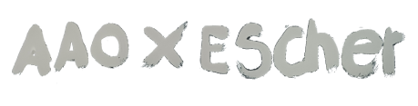

In opdracht van Escher in Het Paleis heb ik een korte promotie video gemaakt voor de tentoonstelling "escher & Islamic Art". Het Amsterdams Andalusisch Orkest geeft een concert in deze expositiezaal. Daarom geef ik in samenwerking met een van de muzikanten van het orkest een klein voorproefje van hoe dit gaat klinken en wat de connectie tot de werken in de zaal is.